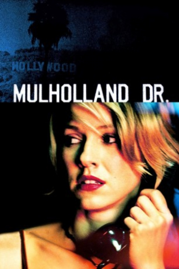

Country:United States, 147 minutes
Spoken languages:Spanish, English
Genres:Thriller, Drama, Mystery
Director(s):David Lynch
Writer(s):David Lynch
Video Codec:Unknown
Number: 2806


Certification:
Storyline:
Blonde Betty Elms has only just arrived in Hollywood to become a movie star when she meets an enigmatic brunette with amnesia. Meanwhile, as the two set off to solve the second woman's identity, filmmaker Adam Kesher runs into ominous trouble while casting his latest project.
Cast:
Medium: Bluray,
Comments: Part of: David Lynch box set
Loaned: No
Aspect ratio: Unknown